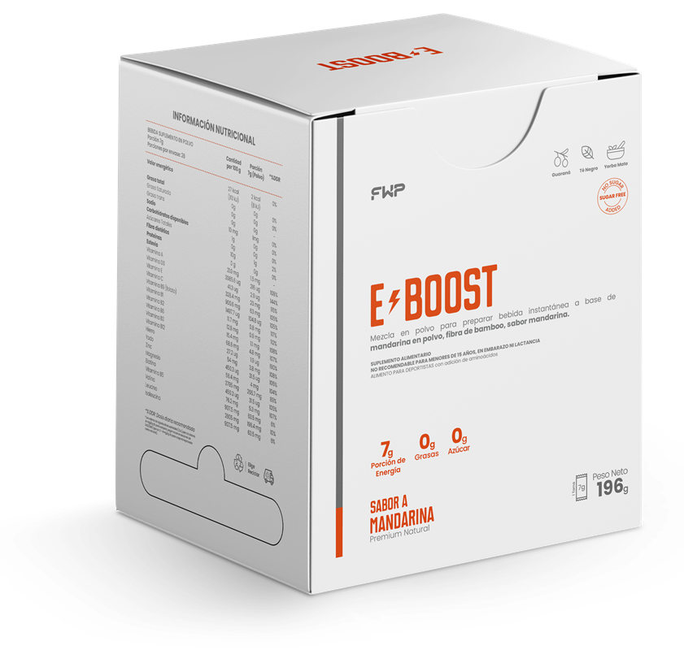
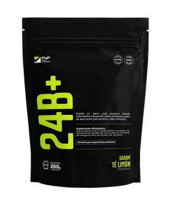
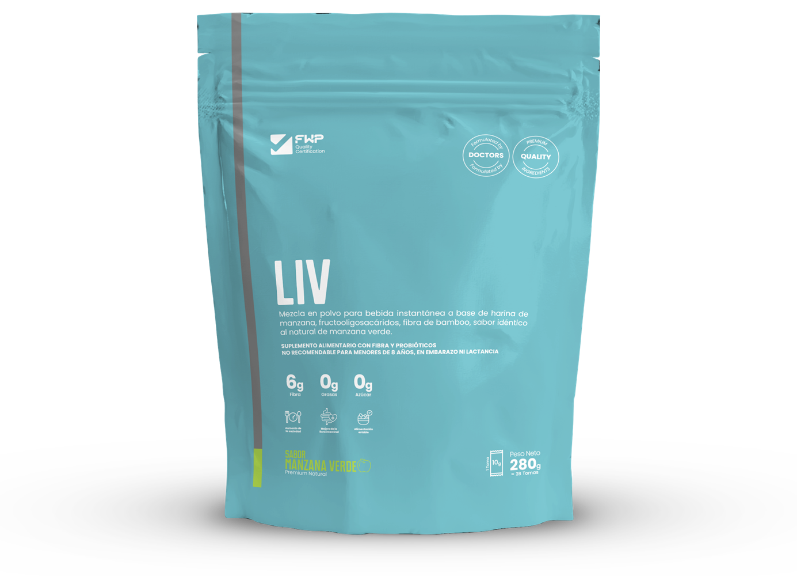

Publicación 1
Cómo elegir un producto FWP según tu objetivo y tu rutina
Una comparación práctica entre energía, activación, digestión, belleza y bienestar.
Leer la guía →Contenido para elegir con claridad
Quince guías evergreen para entender mejor cada alternativa, preparar los productos de forma responsable y construir hábitos que sí tengan sentido dentro de tu rutina.
Artículo más reciente
Publicaremos dos guías por semana, después de su revisión editorial.
Una comparación práctica entre energía, activación, digestión, belleza y bienestar.
Leer la guía →
Cómo ordenar descanso, alimentación y pausas antes de sumar un suplemento a tu jornada.
Leer la guía →
Formato, porción, ingredientes y enfoque: son productos distintos y conviene separarlos.
Leer la comparación →
Hábitos cotidianos, criterios útiles y una mirada clara a LIV dentro de una alimentación equilibrada.
Leer la guía →